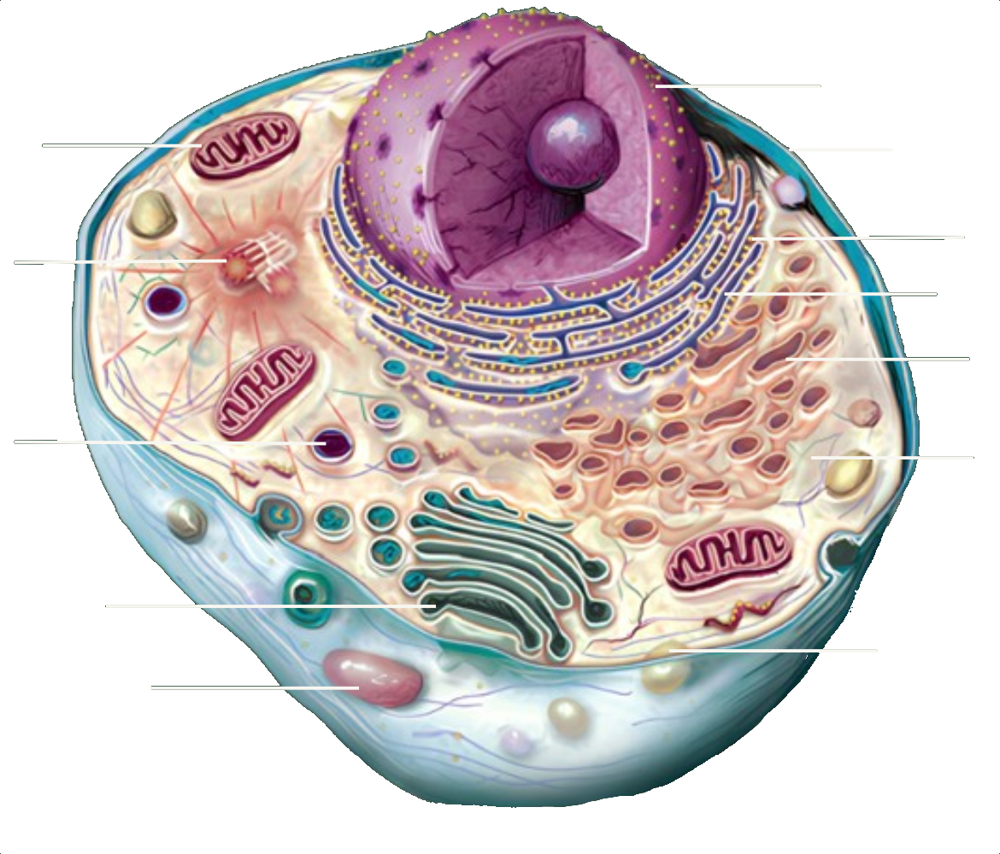

Célula Animal
 Núcleo Citoplasma Membrana Plasmática Mitocondrias Retículo Endoplasmático Rugoso Retículo Endoplasmático Liso Complejo de Golgi Lisosoma Ribosoma Centriolos Peroxisoma Vacuola Saber más¿Qué son las células?
Una célula es la unidad estructural y funcional más pequeña de todos los seres vivos, un sistema vivo microscópico que puede existir como un organismo completo (unicelular) o formar parte de un organismo más grande (multicelular).
Una célula animal
es la unidad básica de los animales y los humanos, siendo un tipo de célula eucariota que tiene un núcleo bien definido y varias organelas, como mitocondrias, lisosomas y retículo endoplasmático, dentro de su citoplasma.
Ver las organelas.jpg)
El núcleo
es el "centro de control" de las células eucariotas (animales, plantas, hongos, etc.), almacenando ADN (material genético) y controlando las actividades celulares, como la producción de proteínas y la división celular.
La membrana plasmática
es una película delgada que rodea la célula, compuesta principalmente por una bicapa lipídica (fosfolípidos) y proteínas, así como carbohidratos en el glucocálix. Su función principal es la permeabilidad selectiva, controlando el transporte de sustancias hacia dentro y fuera de la célula, manteniendo la estabilidad interna.
El citoplasma
es la región de la célula entre la membrana plasmática y el núcleo. Está compuesto principalmente por el citosol (un fluido gelatinoso), organelas celulares, y otras estructuras como el citoesqueleto.
Las mitocondrias
son organelas de las células eucariotas que funcionan como "plantas de energía," generando la mayor parte de la energía química (ATP) necesaria para las actividades celulares a través de la respiración celular. Tienen dos membranas (externa e interna) y su propio ADN y ribosomas.
El retículo endoplasmático
es una red de membranas interconectadas en las células eucariotas, esencial para el transporte de proteínas y lípidos, y para el metabolismo celular. Se divide en:
El retículo endoplasmático rugoso
es una organela formada por una red de membranas con ribosomas adheridos a su superficie. Su función principal es producir y modificar proteínas que pueden ser enviadas fuera de la célula, incorporadas en la membrana plasmática, o utilizadas en organelas como los lisosomas.
El retículo endoplasmático liso
está formado por una red de túbulos sin ribosomas. Tiene funciones importantes como la producción de lípidos y hormonas esteroides, la desintoxicación de sustancias dañinas, y el metabolismo de carbohidratos.

El complejo de Golgi
está formado por pilas de sacos membranosos aplanados. Su función principal es organizar, modificar y empaquetar proteínas y lípidos producidos por el retículo endoplasmático, preparándolos para su uso dentro de la célula o para su exportación fuera de ella.
Los lisosomas
son organelas celulares en forma de vesículas que contienen enzimas digestivas, actuando como el "sistema digestivo" de la célula. Su función principal es la digestión de materiales extraños a la célula (heterofagia) y el reciclaje de componentes celulares obsoletos o dañados (autofagia).
Los ribosomas
son pequeñas organelas presentes en todos los tipos de células. Son responsables de la síntesis de proteínas, leyendo las instrucciones del ARN mensajero y ensamblando aminoácidos en el orden correcto. Pueden estar libres en el citoplasma o adheridos al retículo endoplasmático rugoso, dependiendo de dónde se utilizará la proteína.
Los centriolos
son organelas cilíndricas que se encuentran en las células animales. Desempeñan un papel fundamental en la división celular, ayudando a organizar el huso mitótico, que separa los cromosomas durante la mitosis y la meiosis. Además, participan en la formación de cilios y flagelos, estructuras importantes para el movimiento celular.
Los peroxisomas
son pequeñas organelas rodeadas por una sola membrana, que se encuentran en las células eucariotas, que contienen enzimas oxidativas, como la catalasa, para desintoxicar la célula, metabolizar grasas, y sintetizar fosfolípidos.
Las vacuolas
son pequeñas vesículas rodeadas por una membrana que tienen funciones como almacenar sustancias (como desechos y nutrientes), ayudar en la digestión celular, y contribuir a la regulación osmótica. A diferencia de la gran vacuola central de las células vegetales, las vacuolas animales son generalmente más pequeñas, más numerosas y temporales.